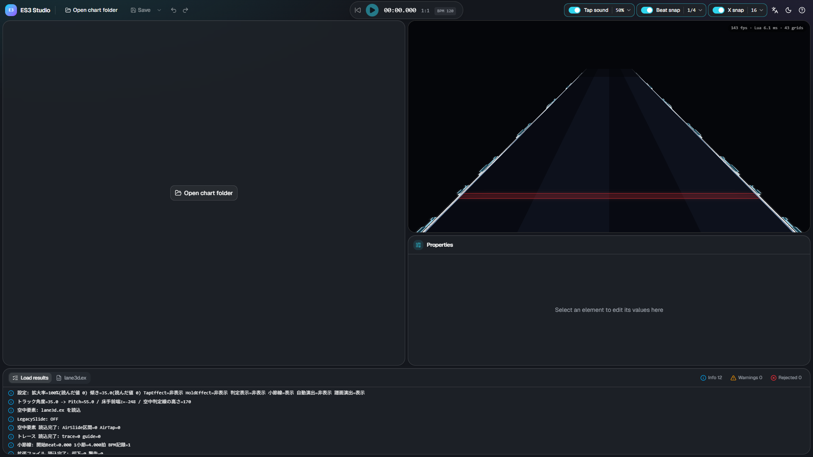
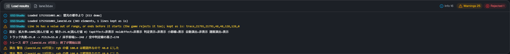
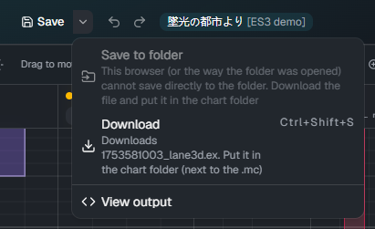
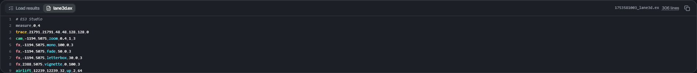

Open and save
Opening a chart folder

Click Open chart folder and choose the song folder that contains the chart (.mc). Choose the folder, not a file.
- If the folder has one chart, it opens right away
- If it has several, you choose which one to edit. Charts that are not Slide, have Free Mode off, or already have an extension file are marked
- If you have unsaved changes, you are asked before opening
In Chrome and Edge, the browser asks whether the site may view the files. Allow it to open the folder.
Files that are read
ES3 Studio reads these files from the chart folder.
| File | Used for |
|---|---|
<chart name>.mc |
Floor notes (edited and written back), BPM, the chart's scroll / jump, the names of the audio and background image |
<chart name>_lane3d.ex |
The extension file you edit. Created if it does not exist |
<chart name>_chart_3d.ex |
The old name of the extension file. Read only when there is no _lane3d.ex |
<chart name>_lane3d.src |
The file of the ES3 plugin for the chart editor. Read only when neither .ex exists |
| Audio | Used for playback. Without it, playback is silent |
| Background image | Shown behind the preview (slightly darkened). Without it, there is no background |
Load results

The Load results tab in the bottom panel shows what happened while loading.
- Info: which files were read, how many elements, and so on
- Warnings: it works, but you may want to check
- Rejected: lines the game ignores too. ES3 Studio does not turn them into elements, but keeps the line as it is when saving
Lines starting with [T3D] are the log of the skin's script (the same as in the game; currently in Japanese).
Saving

Click Save (Ctrl+S) to save <chart name>_lane3d.ex. If you changed floor notes, the chart (<chart name>.mc) is saved too. A dot on the button means there are unsaved changes.
- Chrome and Edge: writes directly into the chart folder you opened. The first time, the browser asks for permission to write
- Other browsers (or when the folder cannot be written): the file is downloaded. Put the downloaded file in the chart folder (next to the
.mc)
The ▾ next to Save lets you choose how to save.
| Menu | What it does |
|---|---|
| Save to folder | Writes directly into the chart folder (only when the folder was opened in Chrome or Edge) |
| Download (Ctrl+Shift+S) | Always available: saves as a download |
| View output | Opens the lane3d.ex tab in the bottom panel |
The first time you overwrite the chart (.mc), you are asked to confirm. Only the floor notes change; nothing else in the file is touched.
If the same chart is open in the MalodyV chart editor, saving there will overwrite your changes from ES3 Studio, so close it first.
The first time you overwrite a lane3d.ex that ES3 Studio did not write (for example, one written by hand), you are asked to confirm.
Overwriting reorders elements by time and moves comments and other non-element lines to the top (their content is kept).
The output

The lane3d.ex tab in the bottom panel shows exactly what will be saved.
- Click a line to select its element (Shift to add)
- Line numbers match "line N" in the game log, so you can find the line when the game shows a warning
- Copy all copies the whole file to the clipboard
Checking in the game
After saving, reopen the chart in the game. Make sure the skin is Extra-Slide v3 and Free Mode is on for the chart.